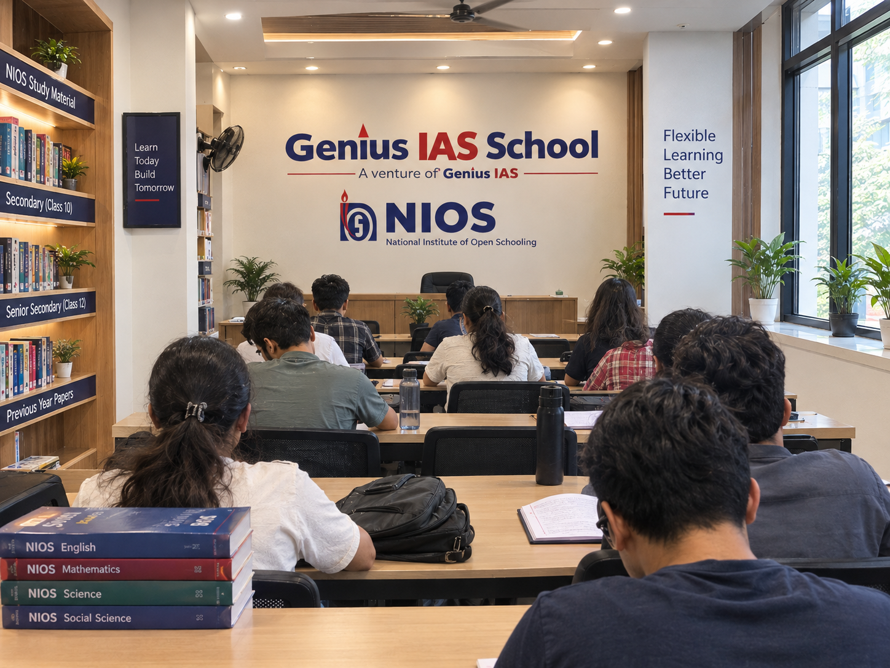

School Integrated Program through NIOS
Complete Classes 11 & 12 at your own pace with strong conceptual clarity, personalized learning, and school-integrated coaching in Humanities or Commerce.
Our integrated programs prepare students for leading entrance and competitive examinations, including CLAT, IPM, CUET, and UPSC Foundation, while building a strong academic foundation for future success.
India’s Open School, Explained Simply.
NIOS is an autonomous institution under the Ministry of Education, Government of India, offering Senior Secondary (Class 12) certification through flexible, learner-paced study — with public exams, on-demand exams and credit-transfer routes.
- Senior Secondary certification with a minimum of five subjects
- Two admission blocks every year plus On-Demand Exams when you are ready
- Transfer of Credit for subjects already passed in another recognized board
- Certification accepted for higher education and employment — confirm your target institution’s rules during counselling

NIOS FAQs
NIOS certification is issued by an autonomous institution under the Ministry of Education, Government of India, and is accepted for higher education and employment. Specific colleges, universities and recruiters have their own rules, so confirm your target institution’s requirements with our counsellors before enrolling.
School dropouts returning to education, learners who could not clear board exams, students needing a flexible pace alongside entrance preparation, and anyone seeking mark improvement or an additional qualification through open schooling.
Usually not. NIOS offers Transfer of Credit for eligible passed subjects and on-demand/stream routes for the rest — so you typically re-appear only for what is pending. Bring your marksheet to counselling and we will map the shortest route.
Your Class 12 Comeback Starts Here.
Free guidance on route, subjects, documents and timelines — then coaching that carries you to results.